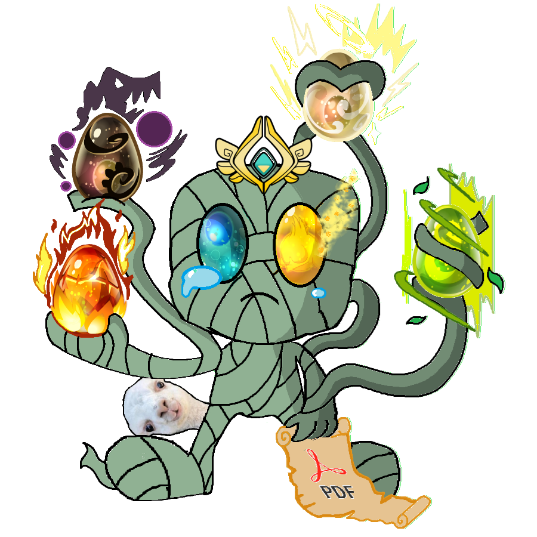

Les bails d'Ylnad
Salut bande de noobs !
Vous êtes situés sur la page d'accueil du site officiel de l'incroyable, que dis-je, le fantasticuleux, j'ai nommé :

*acclamation de la foule en délire, au bord de l'émeute, ainsi que quelques évanouissements dus à l'émotion*